AI Engineer · Full Stack Developer — arquitectura, deployments, agentes de IA y RAG
AI Engineer y Full Stack Developer con más de 2 años de experiencia en agentes de IA, soluciones RAG y automatizaciones empresariales en producción. Trabajo el proyecto completo: diseño de arquitectura, base de datos, backend, frontend y deployment en la nube. He construido bots conversacionales con LLMs, integraciones RPA con portales externos, pipelines de automatización de reportes y sistemas de búsqueda documental con IA generativa — siempre con foco en que funcionen de verdad en entornos reales, no solo en demo.
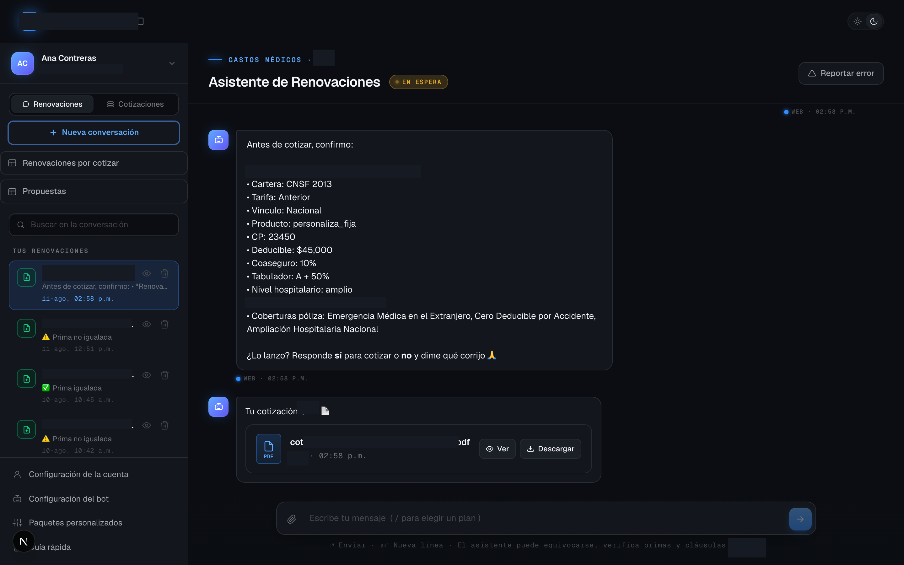
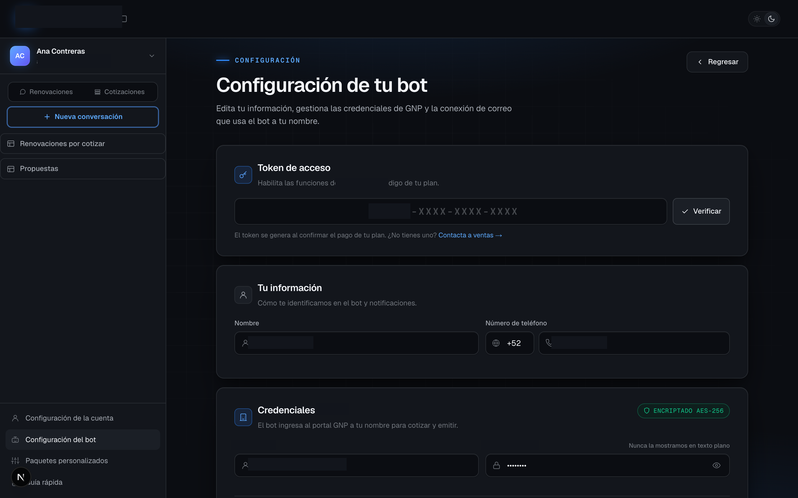
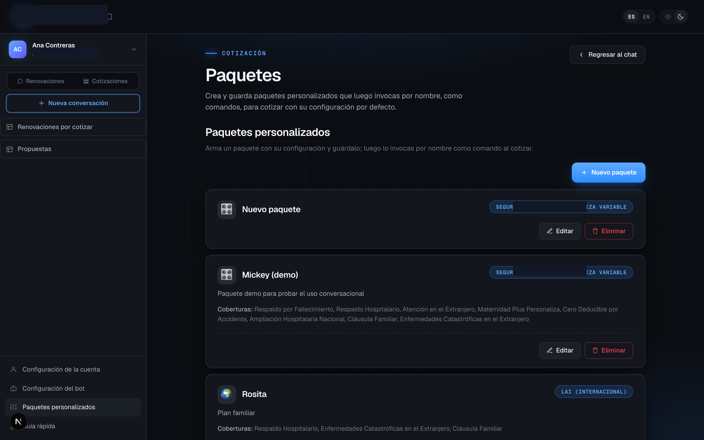
Bot de WhatsApp que usa un LLM para entender y limpiar los datos del usuario, cotiza pólizas en tiempo real interactuando por RPA con el portal de una aseguradora, y valida cada dato contra reglas de negocio antes de confirmar. Elevó la tasa de igualación de primas en renovaciones de 41% a cerca del 90%, con manejo de sesiones concurrentes por cuenta para escalar a múltiples usuarios al mismo tiempo.
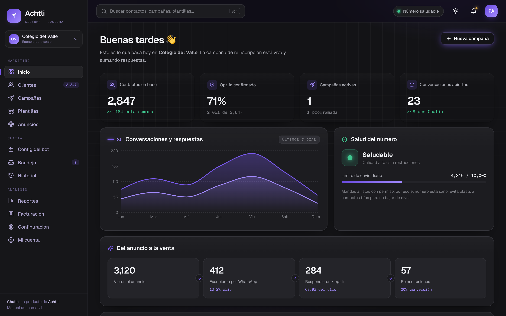
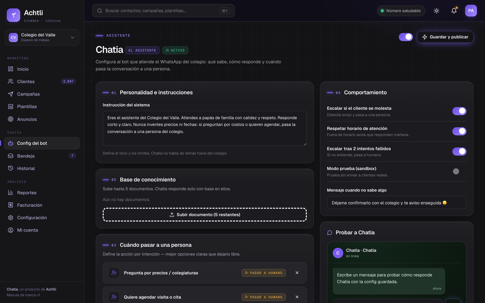
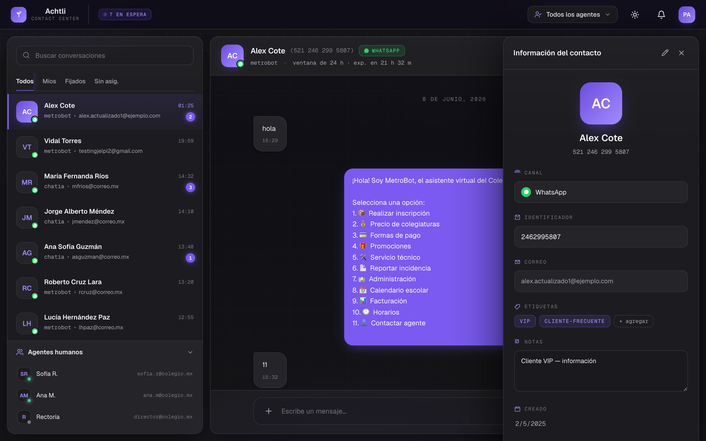
Plataforma de marketing por WhatsApp construida desde cero como proyecto propio: backend en NestJS, almacenamiento en Azure Storage, y un panel de administración completo para campañas, contactos, contact center y un asistente de IA (Chatia) configurable por cada cuenta — todo el producto, de la base de datos a la interfaz que usa el cliente final.
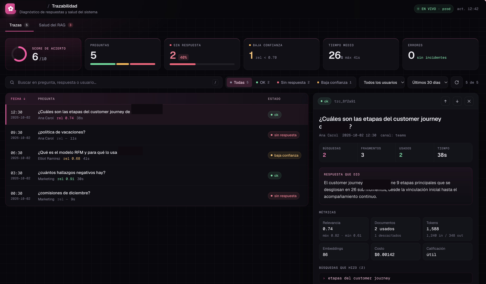
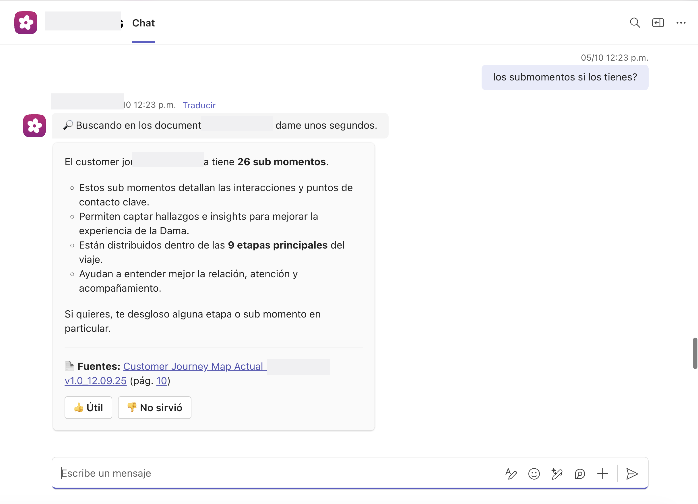
Sistema de búsqueda documental construido desde cero (RAG propio, no una integración de terceros) usando Kernel Memory y Azure OpenAI sobre backend .NET, con bot integrado a Microsoft Teams vía Adaptive Cards. Incluye un dashboard de trazabilidad propio que mide relevancia, tasa de respuestas sin resolver y costo por consulta, para poder diagnosticar y mejorar la calidad del RAG en producción.
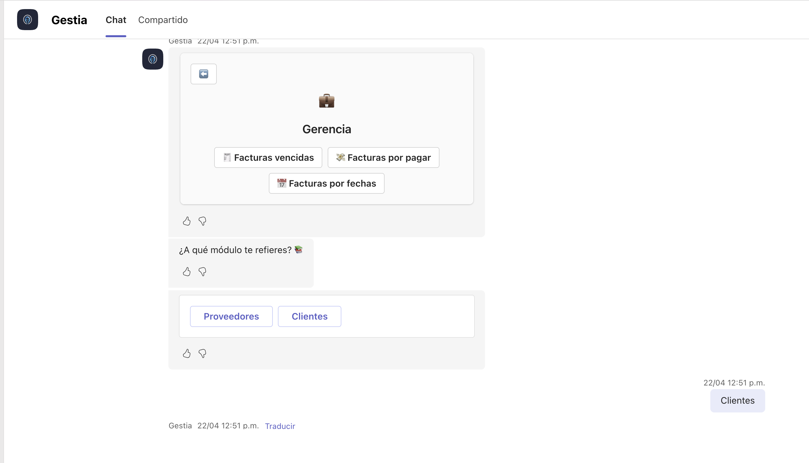
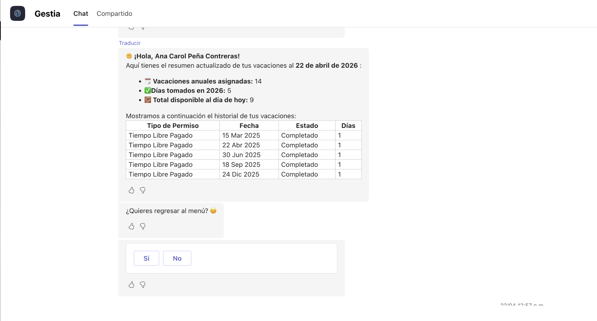
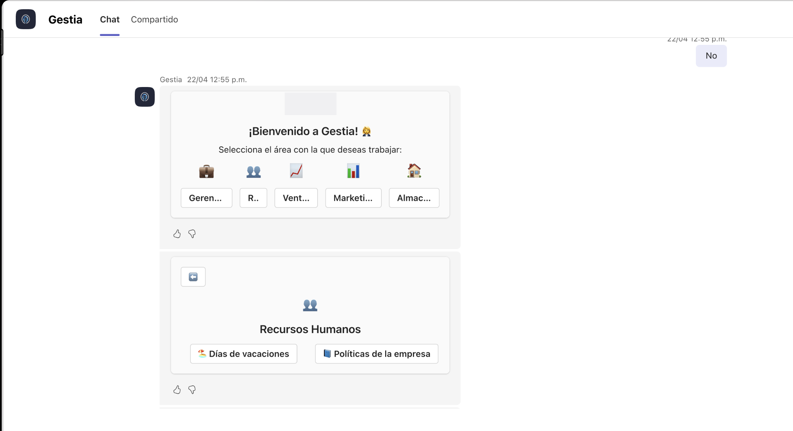
Bot construido con Copilot Studio y Power Automate que responde consultas en lenguaje natural sobre reportes de ventas, contabilidad, marketing (leads ganados) y minutos por proyecto, además de autoservicio de RH (vacaciones, políticas), obteniendo los datos directamente de Dynamics 365 F&O — sin que el usuario tenga que entrar al ERP ni pedirle el dato a otra persona.
Sistema que agrega datos de ventas y autoconsumo desde ERP y CRM, clasifica y prorratea más de 5,000 cuentas en menos de 3 minutos con 96.8% de acierto, genera el reporte en Excel y lo envía por correo con un flujo de aprobación previa. Desplegado en Azure con manejo seguro de credenciales vía Key Vault.
Sistema RAG que recomienda estudios de laboratorio en función de la consulta del usuario, indexando más de 200 documentos e integración con la API de Meta para enviar plantillas de WhatsApp de confirmación de citas, conectado a HubSpot para dar seguimiento a cada contacto. En producción atiende alrededor de 500 consultas diarias.
Solución que usa visión por computadora para leer credenciales de identificación desde una foto, extraer los datos (nombre, CURP, domicilio, etc.) automáticamente y subirlos directo a un ERP — elimina por completo la captura manual y el margen de error de transcribir el dato a mano.
Piloto de conteo automático de pasajeros en rutas de transporte público usando visión por computadora, validado en campo como alternativa confiable al conteo manual que hoy depende de una persona a bordo contando y registrando a mano.
Diseño de arquitectura, desarrollo de agentes de IA en producción, servicios backend en Node.js y .NET integrados con ERPs/CRMs, frontends en React/Next.js, soluciones RAG, automatización de procesos financieros, agentes conversacionales multicanal y despliegue en Azure.
Desarrollo de agentes con Copilot Studio conectados a ERP/CRM y flujos en Power Automate.
Configuración e integraciones en Dynamics 365 F&O, micro-agentes embebidos y apps con Power Apps.